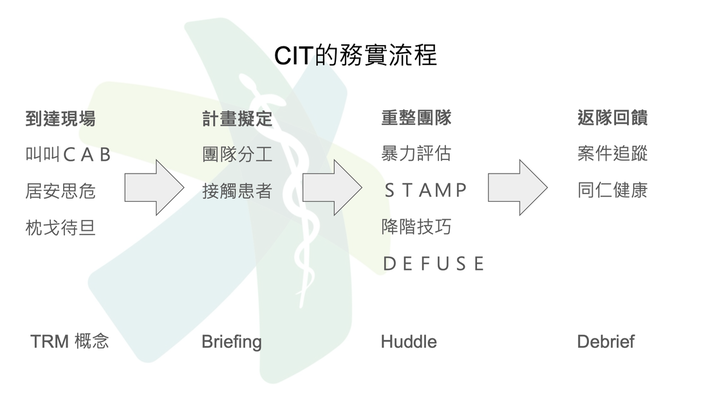
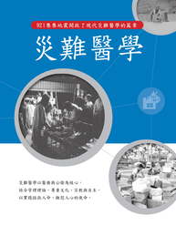
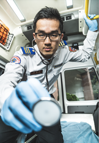

2023 年 4 月刊
台灣緊急醫療救護通訊
危機處理小組訓練(CIT: Crisis Intervention Team)旨在協助第一線人員安全地接觸陷入精神危機的病患。（按：圖為消防署2022高級救護技術員複訓CIT訓練情形）
國內要聞_by高雄長庚醫院 洪士強醫師

台灣緊急救護醫療指導醫師學會於3月31舉行醫療指導醫師繼續教育課程，主題為 「危機處理小組訓練之展望」。根據美國的調查資料顯示，監獄中約有五分之二的受刑人，有精神疾病病史。而女性受刑人，約三分之二罹有精神疾病病史，這數字幾乎是男性受刑人的兩倍（註1）。而在急診，因精神或行為相關問題來求助者，約佔來診人數的4%（註2）。
許多見諸報紙版面的社會事件，多與精神疾病有關。事件當下的前線反應者，往往是地方的緊急救護人員與執法人員。我們能理解，罹患精神疾病者，需要的是援助，而不是手銬。但這一類的出勤是頗具風險的。令人沮喪的是，許多的人員傷亡發生在這些現場（註3-5）。 因此，我們需建置一個事前已受過訓練與約定的聯合團隊（緊急救護、執法單位、公共衛生等），作為危機處理小組（crisis intervention team, CIT）。
附圖為簡要CIT運作流程，取自台灣緊急救護醫療指導醫師學會訓練講義。
CIT 專注於精神健康危機的應對，是一個社區導向的建置，透過建立跨單位合作的夥伴基礎上，已達到保障人身安全的目標。自去年7月起，消防署也陸續舉辦多梯次的CIT課程，而北市消防局也規劃將於今年年中陸續開訓 CIT課程。
（註1），Mental Health Treatment While Incarcerated - NAMI
（註2），Barratt H, Rojas-García A, Clarke K, Moore A, Whittington C, Stockton S, Thomas J, Pilling S, Raine R. Epidemiology of Mental Health Attendances at Emergency Departments: Systematic Review and Meta-Analysis. PLoS One. 2016 Apr 27;11(4):e0154449. doi: 10.1371/journal.pone.0154449. PMID: 27120350; PMCID: PMC4847792.
（註3），交流園地-新北市政府消防局 (ntpc.gov.tw) 八安大橋跳水事件
（註4）， 刺殺鐵路警察李承翰鄭姓凶嫌三審獲判17年定讞| 社會 - CTWANT
（註5），台南殺警案背後，警察訓練出了什麼問題？ - 報導者 The Reporter (twreporter.org)
致謝：台大醫院林皓陽醫師提供參考資料
許多見諸報紙版面的社會事件，多與精神疾病有關。事件當下的前線反應者，往往是地方的緊急救護人員與執法人員。我們能理解，罹患精神疾病者，需要的是援助，而不是手銬。但這一類的出勤是頗具風險的。令人沮喪的是，許多的人員傷亡發生在這些現場（註3-5）。 因此，我們需建置一個事前已受過訓練與約定的聯合團隊（緊急救護、執法單位、公共衛生等），作為危機處理小組（crisis intervention team, CIT）。
附圖為簡要CIT運作流程，取自台灣緊急救護醫療指導醫師學會訓練講義。
CIT 專注於精神健康危機的應對，是一個社區導向的建置，透過建立跨單位合作的夥伴基礎上，已達到保障人身安全的目標。自去年7月起，消防署也陸續舉辦多梯次的CIT課程，而北市消防局也規劃將於今年年中陸續開訓 CIT課程。
（註1），Mental Health Treatment While Incarcerated - NAMI
（註2），Barratt H, Rojas-García A, Clarke K, Moore A, Whittington C, Stockton S, Thomas J, Pilling S, Raine R. Epidemiology of Mental Health Attendances at Emergency Departments: Systematic Review and Meta-Analysis. PLoS One. 2016 Apr 27;11(4):e0154449. doi: 10.1371/journal.pone.0154449. PMID: 27120350; PMCID: PMC4847792.
（註3），交流園地-新北市政府消防局 (ntpc.gov.tw) 八安大橋跳水事件
（註4）， 刺殺鐵路警察李承翰鄭姓凶嫌三審獲判17年定讞| 社會 - CTWANT
（註5），台南殺警案背後，警察訓練出了什麼問題？ - 報導者 The Reporter (twreporter.org)
致謝：台大醫院林皓陽醫師提供參考資料
（註1）， Mental Health Treatment While Incarcerated - NAMI
（註2），Barratt H, Rojas-García A, Clarke K, Moore A, Whittington C, Stockton S, Thomas J, Pilling S, Raine R. Epidemiology of Mental Health Attendances at Emergency Departments: Systematic Review and Meta-Analysis. PLoS One. 2016 Apr 27;11(4):e0154449. doi: 10.1371/journal.pone.0154449. PMID: 27120350; PMCID: PMC4847792.
（註3），交流園地-新北市政府消防局 (ntpc.gov.tw) 八安大橋跳水事件
（註4）， 刺殺鐵路警察李承翰鄭姓凶嫌三審獲判17年定讞| 社會 - CTWANT
（註5），台南殺警案背後，警察訓練出了什麼問題？ - 報導者 The Reporter (twreporter.org)
致謝：台大醫院林皓陽醫師提供參考資料
（註2），Barratt H, Rojas-García A, Clarke K, Moore A, Whittington C, Stockton S, Thomas J, Pilling S, Raine R. Epidemiology of Mental Health Attendances at Emergency Departments: Systematic Review and Meta-Analysis. PLoS One. 2016 Apr 27;11(4):e0154449. doi: 10.1371/journal.pone.0154449. PMID: 27120350; PMCID: PMC4847792.
（註3），交流園地-新北市政府消防局 (ntpc.gov.tw) 八安大橋跳水事件
（註4）， 刺殺鐵路警察李承翰鄭姓凶嫌三審獲判17年定讞| 社會 - CTWANT
（註5），台南殺警案背後，警察訓練出了什麼問題？ - 報導者 The Reporter (twreporter.org)
致謝：台大醫院林皓陽醫師提供參考資料

國際要聞_by 花蓮慈濟醫院 徐子恒醫師
何時應戴罩？實證醫學與KISS守則怎麼說？
在後疫情時代，COVID 19的感染威脅下降，EMT出勤時的個人防護裝備該如何選擇呢？除了實證醫學可以指引我們日常工作的方式是否正確，EMS界在制定一個政策時，還有一個KISS守則。KISS守則的原文是Keep It Simple and Stupid，意思是一項措施或政策最好是越簡單越好，避免不必要的複雜性，讓人易於遵從，就最容易成功。
在實證醫學方面，其實在EMS日常的出勤工作當中，穿戴外科口罩，其感染空氣傳播或飛沫傳播的傳染性疾病，機率並不比穿戴N95高。有可能是因為一般出勤的情況下，與病患接觸的時間並不算長。美國CDC建議載送結核病、麻疹、水痘等傳染病病患時，車輛保持通風，將空調循環系統切換至非循環狀態，若有抽氣設備可裝在車輛後方，向後排氣。感染的控制儘量做到「源頭控制」(Source control)，也就是請載送的確認感染或疑似感染患者戴上外科口罩。只有在病患無法戴口罩的情況下，醫護人員有必要戴上口罩。
雖然實證醫學的證據是這麼說的，但是在KISS守則中，為簡化政策，出勤時常規配戴外科口罩或N95皆是合理的作法。只是N95的價格大約是外科口罩的六倍，也要考量物資的供應是否充裕。
在後疫情時代，COVID 19的感染威脅下降，EMT出勤時的個人防護裝備該如何選擇呢？除了實證醫學可以指引我們日常工作的方式是否正確，EMS界在制定一個政策時，還有一個KISS守則。KISS守則的原文是Keep It Simple and Stupid，意思是一項措施或政策最好是越簡單越好，避免不必要的複雜性，讓人易於遵從，就最容易成功。
在實證醫學方面，其實在EMS日常的出勤工作當中，穿戴外科口罩，其感染空氣傳播或飛沫傳播的傳染性疾病，機率並不比穿戴N95高。有可能是因為一般出勤的情況下，與病患接觸的時間並不算長。美國CDC建議載送結核病、麻疹、水痘等傳染病病患時，車輛保持通風，將空調循環系統切換至非循環狀態，若有抽氣設備可裝在車輛後方，向後排氣。感染的控制儘量做到「源頭控制」(Source control)，也就是請載送的確認感染或疑似感染患者戴上外科口罩。只有在病患無法戴口罩的情況下，醫護人員有必要戴上口罩。
雖然實證醫學的證據是這麼說的，但是在KISS守則中，為簡化政策，出勤時常規配戴外科口罩或N95皆是合理的作法。只是N95的價格大約是外科口罩的六倍，也要考量物資的供應是否充裕。
參考資料：
- When to Mask: Evidence-Based Practice Versus KISS Principle; JEMS, Katherine West, https://www.jems.com/equipment-gear/when-to-mask-evidence-based-practice-versus-the-kiss-principle/
- Transmission-based precautions for the prevention and control of infections: aide-memoire, https://www.who.int/publications/i/item/WHO-UHL-IHS-IPC-2022.2

焦點評析_by 台大醫院雲林分院 江文莒醫師
甫發表於《新英格蘭醫學期刊》(N Engl J Med 2023;388:299-309) 的荷蘭10中心160位VF-OHCA病人的 INCEPTION隨機臨床試驗顯示，ECMO-CPR與傳統的ACLS-CPR有一樣的 30天良好神經學預後 (E-CPR 20% vs ACLS-CPR 16%; P=0.52)；此與之前《剌胳針》美國明尼蘇達單一中心的ARREST 研究 (Lancet. 2020;396:1807-1816) 顯示ECMO-CPR大勝的結果大相逕庭：ARREST研究中存活出院率E-CPR 43% vs ACLS-CPR 7%; 追蹤至6個月神經學預後良好率E-CPR 43% vs ACLS-CPR 0%。我們應如何解讀，以形成我們的EMS後送政策呢?其實兩篇研究的結果不同，與三大因素有關：
❶病人挑選不同：INCEPTION 的病人是現場ALS 15分鐘以上且有出現過VF的病人; ARREST 的病人則是VF必須電擊3次以上且到院前時間小於30分鐘的病人; 因此兩試驗對照組病人的存活機會並不一致。
❷治療時間不同：以call-to-flow(ECMO)的時間來說，INCEPTION 的中位數74分鐘，比ARREST的59分鐘晚許多，因此兩試驗介入組的存活可能也會不同。
❸醫療經驗不同：INCEPTION在10中心收案3年9個月，每中心E-CPR收案量大約是每年2次; 但ARREST為單一強大中心，ECPR收案量大約是每月2次。經驗值低會反映在許多系統時間延長與無法測量的照護過程，而間接影響介入組存活機會。
因此，這兩篇結果與其說是不同，不如說是相輔相成：廣域多醫院進行OHCA的ECPR可能因病人選擇與經驗分散而沒有幫助；但若能在院前院後良好配合與有高經驗值的ECPR中心的系統，例如ARREST研究建議能於119通知後20分鐘內開始裝置ECMO的中心，還是能大大提昇頑固性VF-OHCA病人的存活機會。
＊NEJM 短影片：
❶病人挑選不同：INCEPTION 的病人是現場ALS 15分鐘以上且有出現過VF的病人; ARREST 的病人則是VF必須電擊3次以上且到院前時間小於30分鐘的病人; 因此兩試驗對照組病人的存活機會並不一致。
❷治療時間不同：以call-to-flow(ECMO)的時間來說，INCEPTION 的中位數74分鐘，比ARREST的59分鐘晚許多，因此兩試驗介入組的存活可能也會不同。
❸醫療經驗不同：INCEPTION在10中心收案3年9個月，每中心E-CPR收案量大約是每年2次; 但ARREST為單一強大中心，ECPR收案量大約是每月2次。經驗值低會反映在許多系統時間延長與無法測量的照護過程，而間接影響介入組存活機會。
因此，這兩篇結果與其說是不同，不如說是相輔相成：廣域多醫院進行OHCA的ECPR可能因病人選擇與經驗分散而沒有幫助；但若能在院前院後良好配合與有高經驗值的ECPR中心的系統，例如ARREST研究建議能於119通知後20分鐘內開始裝置ECMO的中心，還是能大大提昇頑固性VF-OHCA病人的存活機會。
＊NEJM 短影片：

好物報報（一）災難醫學_by 花蓮慈濟醫院 徐子恒醫師
「遠路不須愁日暮，老年終自望河清」--顧炎武(1644)
《災難醫學》一書出版介紹
《災難醫學》一書出版介紹

台灣急診醫學會於今（民國112）年二月出版了《災難醫學》一書，由台大醫院林鍵皓醫師、周維國醫師與鄭銘泰醫師擔任編輯委員，集國內災難醫學領域的專家們，共同著作與編審，誕生了此堪稱經典的災難醫學巨著。
本書之付梓，象徵的是國內的災難醫學發展已達成熟完整的里程碑。誠如石富元醫師在導論中所言，災難醫學或緊急應變，與各國的歷史、政府體制及社會文化有高度相關，在學習其他先進國家的制度與作法時，如果只是學得皮毛，輕率地將外國的作法移植至國內，很容易水土不服而讓應變本身成為新的災難。
本書內容分為五大部分，在第一部分「災難醫學導論」中，完整地描述了台灣的災難應變系統的現況、演變與未來的挑戰，針砭了國內應變體系之優缺點，可看出急診醫師身為醫者的良苦用心與深切期許。除了導論之外，本書也涵蓋了醫急應變時，面臨到傷患處置、傳染病控制等問題，及各種類別的災難需特別注意之事項，與醫療機構之緊急事件管理和教育、演習之相關知識。不論在理論與實務方面，都是有志從事災難應變工作與教育訓練之人士可以從中參考並獲得知識與啟發之書。
自1999年921集集地震以來，台灣的災難醫學歷經了24年的發展，終於將多年來前輩們的心血濃縮集成一本《災難醫學》。災難醫學是一條漫長的道路；災難發生時會受到大眾高度重視，但在無災無難承平時期，面臨的則是冷落與遺忘，雖是人之常情，然而基於醫者的初心，為實踐拯救人命、撫慰人心的使命，我們必須了解目標的方向。此書即是台灣未來災難醫學繼續走下去的最佳指引。
本書之付梓，象徵的是國內的災難醫學發展已達成熟完整的里程碑。誠如石富元醫師在導論中所言，災難醫學或緊急應變，與各國的歷史、政府體制及社會文化有高度相關，在學習其他先進國家的制度與作法時，如果只是學得皮毛，輕率地將外國的作法移植至國內，很容易水土不服而讓應變本身成為新的災難。
本書內容分為五大部分，在第一部分「災難醫學導論」中，完整地描述了台灣的災難應變系統的現況、演變與未來的挑戰，針砭了國內應變體系之優缺點，可看出急診醫師身為醫者的良苦用心與深切期許。除了導論之外，本書也涵蓋了醫急應變時，面臨到傷患處置、傳染病控制等問題，及各種類別的災難需特別注意之事項，與醫療機構之緊急事件管理和教育、演習之相關知識。不論在理論與實務方面，都是有志從事災難應變工作與教育訓練之人士可以從中參考並獲得知識與啟發之書。
自1999年921集集地震以來，台灣的災難醫學歷經了24年的發展，終於將多年來前輩們的心血濃縮集成一本《災難醫學》。災難醫學是一條漫長的道路；災難發生時會受到大眾高度重視，但在無災無難承平時期，面臨的則是冷落與遺忘，雖是人之常情，然而基於醫者的初心，為實踐拯救人命、撫慰人心的使命，我們必須了解目標的方向。此書即是台灣未來災難醫學繼續走下去的最佳指引。

好物報報（二）Ampoule Holder_by 花蓮慈濟醫院 徐子恒醫師
|

EMT在日常的勤務中，常常會發現許多簡單的工作在到院前的環境中，就變得不簡單。像剝安剖瓶這種小事，在急診室內的急救車上可能還好，在救護現場或是救護車上那種不穩定的環境，不只是不好操作，在急著做ALS處置時，一不小心還可能造成針扎的風險，安剖瓶的空瓶和折下來的頭部也不好收拾善後。 新北的 EMTP林昱佑 擅長發揮創意，用各種方式來改善救護工作。針對這個問題，最近他發明了可將安剖瓶排列夾住的小物，可將安剖瓶一一折斷，並可將折斷下來的頭部收納在背後的小空間中，大大的改善了抽取安剖瓶的方便性與安全性。我們特別訪問了昱佑教官的發想過程。他表示，一開始只是為了改善一個簡單的動作，去學習了3D繪圖，請廠商列印出樣品，再逐步改進。因為成本的考量，還自購了3D列印機，經過了三四的版本的改良，產生了現今的版本。 其中的關鍵在於環形夾具的厚薄，因安剖瓶於3D列印都會有公差，經過幾次測試後才找到最合適的尺寸。目前的尺寸是適合Epinephrine安剖瓶的產品，有5支裝與10支裝兩種，可依照分隊送院距離來選用。未來還計劃推出Amiodarone較大安剖瓶的版本，讓救護工作更加順手且安全。 |
照片提供：林昱佑
|